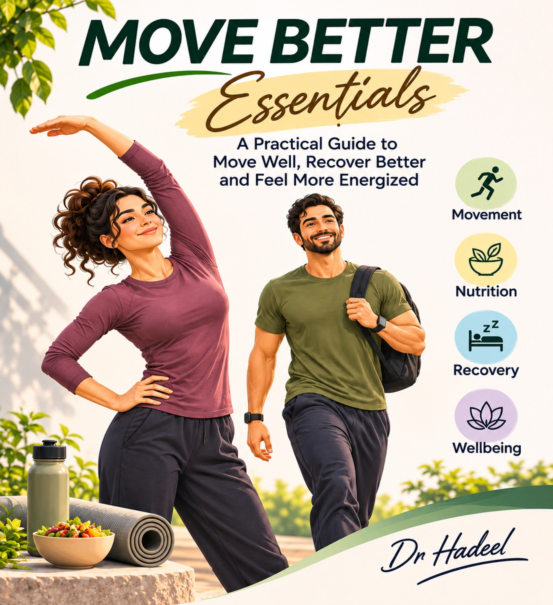

Gentle movement
Illustrated beginner-friendly exercises, mobility and everyday movement guidance.
Introducing MOVE BETTER Essentials, a practical, illustrated guide to moving well, recovering better and feeling more energized.
Gentle, approachable movement for beginners. No gym experience required.
Explore the book
Designed for people who want to begin moving comfortably, build simple habits and make room for recovery.
Illustrated beginner-friendly exercises, mobility and everyday movement guidance.
Practical introductions to relaxation, recovery, nutrition and sleep.
A simple, approachable plan to help turn small sessions into a routine.
Our digital bookstore is being prepared. Secure checkout and instant PDF delivery will be added once payment processing is configured and tested.